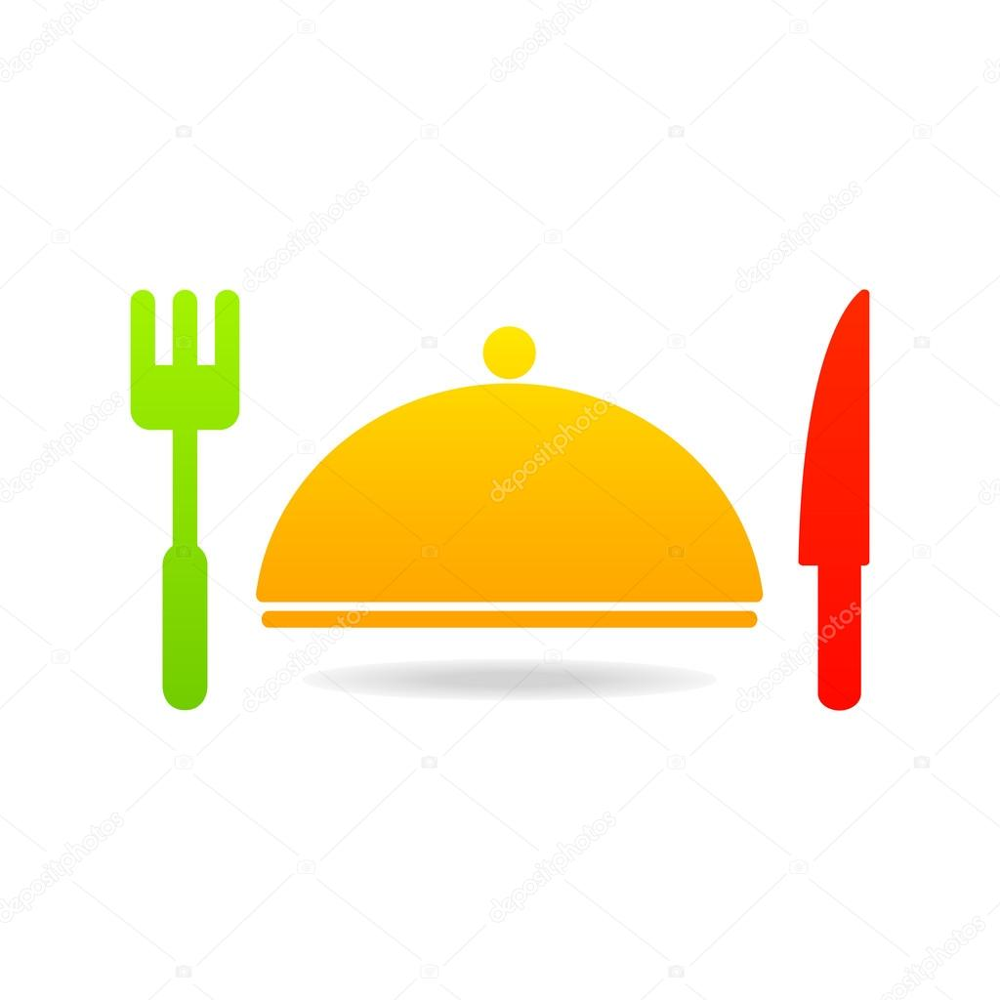
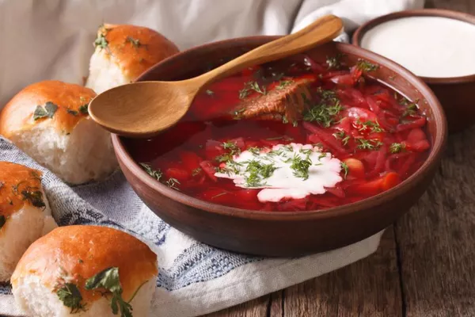
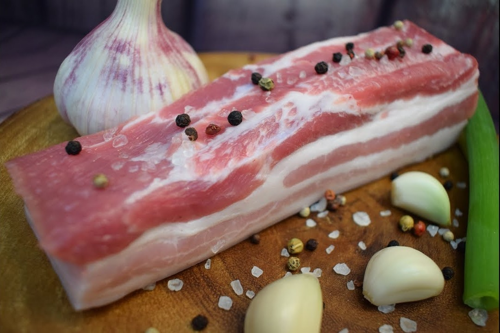
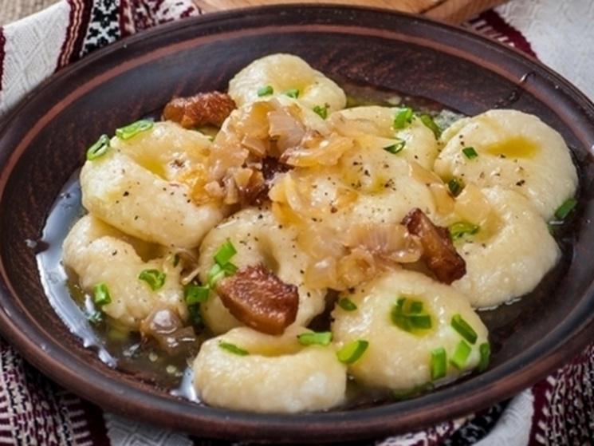
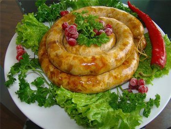

Національні українські страви |
|

БорщЯкий же українець без борщу? Цією традиційною першою стравою обов'язково пригощають іноземців. У кулінарних книгах можна відшукати більш як 50 рецептів борщу, адже в кожному регіоні його готують по-різному. Наваристий м'ясний, приправлений салом ... Або ж пісний з квасолею чи грибами – такий варять під час посту, і вегетаріанці теж будуть задоволені. Замість м’яса можна класти рибу. Крім традиційних буряка, картоплі, моркви, цибулі, капусти та томатів, чого тільки не додають у борщ для пікантності! У деяких рецептах є навіть яблука, сухофрукти, чорнослив! До борщу часто подають пампушки з часником. |

СалоНедарма кажуть: сало – український наркотик. Без нього нам просто нікуди. А скільки анекдотів про сало і українців! Один кум каже іншому: «Ти чув, що від сала розвивається склероз?» А той йому в відповідь: «А я-то думаю, як з'їм вранці шматок сала, так цілий день і не згадую, що їсти хочеться!» Існує безліч рецептів засолювання сала. Найпростіший: подрібнити часник, змішати з перцем, натерти сумішшю підчеревину або сало і витримати в холодильнику дні три. Можна додати духмяні спеції. |

Галушки«Полтавськими галушками» часто називають жителів однойменної області – настільки пізнаваною стала їхня регіональна страва. Галушки бувають як без начинки, так і з м'ясом, печінкою, грибами. |

Домашні ковбаси«Грудочка кашки, кільце ковбаски» – пам'ятаєте рядок з української колядки? Різдвяний стіл українців не обходиться без домашніх ковбас. Дуже смачні ковбаси готують на Закарпатті – можна сподіватися, що вам запропонують «натурпродукт», запечений не в газовій духовці, а в сільській печі, зовсім інший запах, і смак більш пікантний.На Волині теж уміють готувати ковбаси: 2015 року в Луцьку виготовили найдовшу ковбасу – 5 метрів – і зафіксували досягнення у Книзі рекордів України. |
|
В цілім світі кухня наша Мабуть не пасе останніх. Є в ній і супи, й каші, І рецепти для познання. Може хтось там любить чіпси, Гамбургер їдять із сої, Українцю зранку ліпше Тільки сало з ковбасою. У англійців є овсянка, Сир їдять усі французи, Українцю ліпше зранку Галушків з`їсти «від пуза». Є шурпа у азіатів, Це – узвар м`ясний та ситний, Та борщу ніхто не зрадить, Горщик в перерив обідній. Ще – налистники з млинцями, Чи –із сиром, чи – із м`ясом, Буженина з «кабанцями», Чи з узваром, чи із квасом. Пелюстки капусти з бочки, Перець з банки «шишкуватий», Помідори, огірочки, Та кавун солонуватий. Іноземцям – дай «фаст-фуди», Без обмежень, без розбору, Ми ж – обачливіші люди, В шлунку держимо мікрофлору. То ж у цілім світі наша Кухня, мабуть, - не остання. Гордість наша - то не каша, А вареники в сметані. Може з вишнею, може з сиром, Я секрети бережу, Доки «сотий» їм без міри, Вже на «першому» сиджу. Все би з`їв я і одразу: Ковбасу домашню, «зрази», Фаршировані перці, Та із рисом «голубці», «Дерунів» велику гору... Може досить вже? -Облиш. Хочу вилізти з за столу, Та несуть смачний «куліш». «Хропачка як заморили» - Перебралися під дах, На обід борщу зварили, Та, й «чверть» є «на бруньках». Всі секрети йдуть від серця, Від бабусі... до онуки, Та зробити щоб усе це, До «секретів» треба руки. |
|